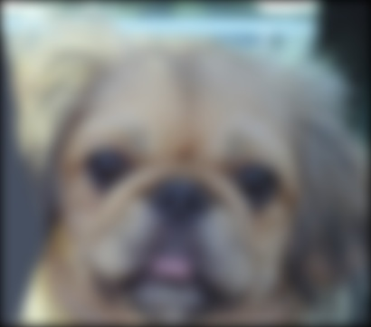

CS 4495 / 6476 Project 1: Image Filtering and Hybrid Images

Hybrid Image
First Part: Image Filtering
Method
The algorithm of linear image filter is straightforward which is the convolution between image and the filter. For each pixel, we should take a 'submatrix' surrounding that pixel, whose size is identical to the filter, then multiply each element in submatrix with filter, add them up. Correspondingly, the resulting value will be the value in output image.
In the process of implementing linear image filter in Matlab, we have to consider about the 'edge' problem which is the pixels near the edges of image cannot be computed in the same way as other pixels. Becuase there would not be enough space to have a submatrix. Fortunately, there are several ways to deal with this problem. As for me, I choose the simplest way, zero padding, to solve the problem.
Example of code with highlighting
Since each individual color image has three layers, red, green and blue, and the computation of filtering towards each of them is identical, I started from implementing the function named 'oneDimensionOut' to simplify 'my_imfilter' and try to enhace the readability of my code.
%example code
% one dimension filter
function oneDimensionOut = oneDimensionFilter(image, filter)
% initialization:
imgHeight = size(image, 1);
imgWidth = size(image, 2);
filterHeight = size(filter, 1);
filterWidth = size(filter, 2);
padHeight = (filterHeight - 1) / 2; %padding vertically
padWidth = (filterWidth - 1) / 2; %padding horizontally
oneDimensionOut = zeros(imgHeight, imgWidth);
pad_oneDimensionOut = zeros(imgHeight + 2*padHeight, imgWidth + 2*padWidth);
% implement function:
pad_oneDimensionOut(1 + padHeight: imgHeight + padHeight, 1 + padWidth: imgWidth + padWidth) = image;
for i = 1: imgHeight
for j = 1: imgWidth
box = pad_oneDimensionOut(i: i + 2*padHeight, j: j + 2*padWidth); %get the small matrix surround this pixel
oneDimensionOut(i, j) = sum(sum(box .* filter));
end
end
end
After having the 'oneDimensionOut' function, I use it in 'my_imfilter' function to deal with the color image which has R/G/B channels.
output = zeros(size(image));
dimension = length(size(image));
if (dimension == 1)
output = oneDimensionFilter(image, filter);
elseif (dimension == 3)
for k = 1: 3
output(:, :, k) = oneDimensionFilter(image(:, :, k), filter);
end
end
end
Result of proj_1_test_filtering
click right and life arrows on each side of image to slide:


Second Part: Hybrid Images
Method
To make a hybrid image of two original ones, we basically have three steps:
-
Remove the high frequencies from image1 by applying Gaussian blur
low_frequencies = my_imfilter(image1, filter); -
Remove the low frequencies from image2 by substract the low frequencies of it from original image
high_frequencies = image2 - my_imfilter(image2, filter); -
Combine the high frequencies and low frequencies
hybrid_image = low_frequencies + high_frequencies;



|
Discussion
Based on the theory of image filtering and experiment in Matlab, the cutoff frequency is critical for image hybrid. We need to modify the cutoff frequency for different images in order to get the best result. Here are hybrid images with different cutoff frequency (click right and life arrows on each side of image to slide):